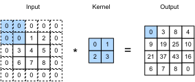

Đệm và Sải bước¶
Nhớ lại ví dụ về phép tích chập trong fig_correlation. Đầu vào có cả chiều cao và chiều rộng là 3 và nhân tích chập có cả chiều cao và chiều rộng là 2, tạo ra một biểu diễn đầu ra với kích thước \(2\times2\). Giả sử hình dạng đầu vào là \(n_\textrm{h}\times n_\textrm{w}\) và hình dạng nhân tích chập là \(k_\textrm{h}\times k_\textrm{w}\), hình dạng đầu ra sẽ là \((n_\textrm{h}-k_\textrm{h}+1) \times (n_\textrm{w}-k_\textrm{w}+1)\): chúng ta chỉ có thể dịch chuyển nhân tích chập đến khi hết các điểm ảnh để áp dụng tích chập.
Trong phần tiếp theo chúng ta sẽ khám phá một số kỹ thuật, bao gồm đệm và tích chập có sải bước, cung cấp nhiều kiểm soát hơn đối với kích thước của đầu ra. Là động lực, lưu ý rằng vì các nhân thường có chiều rộng và chiều cao lớn hơn \(1\), sau khi áp dụng nhiều lớp tích chập liên tiếp, chúng ta có xu hướng kết thúc với các đầu ra nhỏ hơn đáng kể so với đầu vào. Nếu chúng ta bắt đầu với một hình ảnh \(240 \times 240\) điểm ảnh, mười lớp tích chập \(5 \times 5\) giảm hình ảnh xuống còn \(200 \times 200\) điểm ảnh, cắt đi \(30 \%\) hình ảnh và cùng với đó xóa bỏ bất kỳ thông tin thú vị nào ở ranh giới của hình ảnh gốc. Đệm là công cụ phổ biến nhất để xử lý vấn đề này. Trong các trường hợp khác, chúng ta có thể muốn giảm chiều mạnh mẽ, ví dụ: nếu chúng ta thấy độ phân giải đầu vào gốc là cồng kềnh. Tích chập có sải bước là kỹ thuật phổ biến có thể giúp ích trong những trường hợp này.
Đệm¶
Như đã mô tả ở trên, một vấn đề khó chịu khi áp dụng các lớp tích chập là chúng ta có xu hướng mất các điểm ảnh ở chu vi của hình ảnh. Hãy xem xét img_conv_reuse mô tả việc sử dụng điểm ảnh như một hàm của kích thước nhân tích chập và vị trí trong hình ảnh. Các điểm ảnh ở các góc hầu như không được sử dụng.

Vì chúng ta thường sử dụng các nhân nhỏ, đối với bất kỳ phép tích chập nào chúng ta chỉ có thể mất vài điểm ảnh nhưng điều này có thể cộng dồn khi chúng ta áp dụng nhiều lớp tích chập liên tiếp. Một giải pháp đơn giản cho vấn đề này là thêm các điểm ảnh phụ xung quanh ranh giới của hình ảnh đầu vào, do đó tăng kích thước hiệu dụng của hình ảnh. Thông thường, chúng ta đặt giá trị của các điểm ảnh thêm bằng không. Trong img_conv_pad, chúng ta đệm một đầu vào \(3 \times 3\), tăng kích thước của nó lên \(5 \times 5\). Đầu ra tương ứng sau đó tăng lên thành ma trận \(4 \times 4\). Các phần tô bóng là phần tử đầu ra đầu tiên cũng như các phần tử tensor đầu vào và nhân được sử dụng để tính toán đầu ra: \(0\times0+0\times1+0\times2+0\times3=0\).

Nói chung, nếu chúng ta thêm tổng cộng \(p_\textrm{h}\) hàng đệm (khoảng một nửa ở trên và một nửa ở dưới) và tổng cộng \(p_\textrm{w}\) cột đệm (khoảng một nửa ở bên trái và một nửa ở bên phải), hình dạng đầu ra sẽ là
Điều này có nghĩa là chiều cao và chiều rộng của đầu ra sẽ tăng lần lượt theo \(p_\textrm{h}\) và \(p_\textrm{w}\).
Trong nhiều trường hợp, chúng ta sẽ muốn đặt \(p_\textrm{h}=k_\textrm{h}-1\) và \(p_\textrm{w}=k_\textrm{w}-1\) để cho đầu vào và đầu ra có cùng chiều cao và chiều rộng. Điều này sẽ giúp dễ dự đoán hơn hình dạng đầu ra của mỗi lớp khi xây dựng mạng. Giả sử rằng \(k_\textrm{h}\) là số lẻ ở đây, chúng ta sẽ đệm \(p_\textrm{h}/2\) hàng ở cả hai phía của chiều cao. Nếu \(k_\textrm{h}\) là số chẵn, một khả năng là đệm \(\lceil p_\textrm{h}/2\rceil\) hàng ở đầu đầu vào và \(\lfloor p_\textrm{h}/2\rfloor\) hàng ở dưới. Chúng ta sẽ đệm cả hai phía của chiều rộng theo cách tương tự.
CNN thường sử dụng các nhân tích chập với giá trị chiều cao và chiều rộng lẻ, chẳng hạn như 1, 3, 5, hoặc 7. Chọn kích thước nhân lẻ có lợi ích là chúng ta có thể bảo tồn chiều trong khi đệm với cùng số hàng ở trên và dưới, và cùng số cột ở bên trái và bên phải.
Hơn nữa, thực hành sử dụng nhân lẻ
và đệm để bảo tồn chính xác chiều
mang lại lợi ích về mặt ghi chép.
Đối với bất kỳ tensor hai chiều nào X,
khi kích thước của nhân là lẻ
và số hàng và cột đệm
ở tất cả các phía đều bằng nhau,
do đó tạo ra đầu ra có cùng chiều cao và chiều rộng với đầu vào,
chúng ta biết rằng đầu ra Y[i, j] được tính toán
bằng tương quan chéo của đầu vào và nhân tích chập
với cửa sổ lấy tâm tại X[i, j].
Trong ví dụ sau, chúng ta tạo một lớp tích chập hai chiều với chiều cao và chiều rộng là 3 và (áp dụng 1 điểm ảnh đệm ở tất cả các phía.) Cho đầu vào có chiều cao và chiều rộng là 8, chúng ta thấy rằng chiều cao và chiều rộng của đầu ra cũng là 8.
# We define a helper function to calculate convolutions. It initializes the
# convolutional layer weights and performs corresponding dimensionality
# elevations and reductions on the input and output
def comp_conv2d(conv2d, X):
# (1, 1) indicates that batch size and the number of channels are both 1
X = X.reshape((1, 1) + X.shape)
Y = conv2d(X)
# Strip the first two dimensions: examples and channels
return Y.reshape(Y.shape[2:])
# 1 row and column is padded on either side, so a total of 2 rows or columns
# are added
conv2d = nn.LazyConv2d(1, kernel_size=3, padding=1)
X = torch.rand(size=(8, 8))
comp_conv2d(conv2d, X).shape
Khi chiều cao và chiều rộng của nhân tích chập khác nhau, chúng ta có thể làm cho đầu ra và đầu vào có cùng chiều cao và chiều rộng bằng cách [đặt số lượng đệm khác nhau cho chiều cao và chiều rộng.]
# We use a convolution kernel with height 5 and width 3. The padding on either
# side of the height and width are 2 and 1, respectively
conv2d = nn.LazyConv2d(1, kernel_size=(5, 3), padding=(2, 1))
comp_conv2d(conv2d, X).shape
Sải bước¶
Khi tính toán tương quan chéo, chúng ta bắt đầu với cửa sổ tích chập ở góc trên bên trái của tensor đầu vào, và sau đó trượt nó qua tất cả các vị trí cả xuống và sang phải. Trong các ví dụ trước, chúng ta mặc định trượt một phần tử tại một thời điểm. Tuy nhiên, đôi khi, hoặc vì hiệu quả tính toán hoặc vì chúng ta muốn lấy mẫu thấp hơn, chúng ta di chuyển cửa sổ nhiều hơn một phần tử mỗi lần, bỏ qua các vị trí trung gian. Điều này đặc biệt hữu ích nếu nhân tích chập lớn vì nó nắm bắt một vùng lớn của hình ảnh bên dưới.
Chúng ta gọi số hàng và cột được duyệt qua mỗi lần trượt là sải bước. Cho đến nay, chúng ta đã sử dụng sải bước là 1, cả cho chiều cao và chiều rộng. Đôi khi, chúng ta có thể muốn sử dụng sải bước lớn hơn. img_conv_stride hiển thị phép tương quan chéo hai chiều với sải bước là 3 theo chiều dọc và 2 theo chiều ngang. Các phần tô bóng là các phần tử đầu ra cũng như các phần tử tensor đầu vào và nhân được sử dụng để tính toán đầu ra: \(0\times0+0\times1+1\times2+2\times3=8\), \(0\times0+6\times1+0\times2+0\times3=6\). Chúng ta có thể thấy rằng khi phần tử thứ hai của cột đầu tiên được tạo ra, cửa sổ tích chập trượt xuống ba hàng. Cửa sổ tích chập trượt hai cột sang phải khi phần tử thứ hai của hàng đầu tiên được tạo ra. Khi cửa sổ tích chập tiếp tục trượt hai cột sang phải trên đầu vào, không có đầu ra vì phần tử đầu vào không thể lấp đầy cửa sổ (trừ khi chúng ta thêm một cột đệm khác).

Nói chung, khi sải bước cho chiều cao là \(s_\textrm{h}\) và sải bước cho chiều rộng là \(s_\textrm{w}\), hình dạng đầu ra là
Nếu chúng ta đặt \(p_\textrm{h}=k_\textrm{h}-1\) và \(p_\textrm{w}=k_\textrm{w}-1\), thì hình dạng đầu ra có thể được đơn giản hóa thành \(\lfloor(n_\textrm{h}+s_\textrm{h}-1)/s_\textrm{h}\rfloor \times \lfloor(n_\textrm{w}+s_\textrm{w}-1)/s_\textrm{w}\rfloor\). Đi xa hơn một bước, nếu chiều cao và chiều rộng đầu vào chia hết cho các sải bước trên chiều cao và chiều rộng, thì hình dạng đầu ra sẽ là \((n_\textrm{h}/s_\textrm{h}) \times (n_\textrm{w}/s_\textrm{w})\).
Dưới đây, chúng ta [đặt sải bước trên cả chiều cao và chiều rộng là 2], do đó giảm một nửa chiều cao và chiều rộng đầu vào.
Hãy xem (một ví dụ phức tạp hơn một chút).
conv2d = nn.LazyConv2d(1, kernel_size=(3, 5), padding=(0, 1), stride=(3, 4))
comp_conv2d(conv2d, X).shape
Tóm tắt và Thảo luận¶
Đệm có thể tăng chiều cao và chiều rộng của đầu ra. Điều này thường được sử dụng để cho đầu ra có cùng chiều cao và chiều rộng với đầu vào để tránh sự thu nhỏ không mong muốn của đầu ra. Hơn nữa, nó đảm bảo rằng tất cả các điểm ảnh được sử dụng với tần suất như nhau. Thông thường chúng ta chọn đệm đối xứng ở cả hai phía của chiều cao và chiều rộng đầu vào. Trong trường hợp này, chúng ta gọi là đệm \((p_\textrm{h}, p_\textrm{w})\). Thường gặp nhất chúng ta đặt \(p_\textrm{h} = p_\textrm{w}\), trong trường hợp đó chúng ta chỉ đơn giản nói rằng chúng ta chọn đệm \(p\).
Một quy ước tương tự áp dụng cho sải bước. Khi sải bước theo chiều ngang \(s_\textrm{h}\) và sải bước theo chiều dọc \(s_\textrm{w}\) khớp nhau, chúng ta chỉ nói về sải bước \(s\). Sải bước có thể giảm độ phân giải của đầu ra, ví dụ giảm chiều cao và chiều rộng của đầu ra chỉ còn \(1/n\) của chiều cao và chiều rộng của đầu vào khi \(n > 1\). Theo mặc định, đệm là 0 và sải bước là 1.
Cho đến nay tất cả các đệm mà chúng ta thảo luận chỉ đơn giản là mở rộng hình ảnh với các số không. Điều này có lợi ích tính toán đáng kể vì nó dễ thực hiện. Hơn nữa, các toán tử có thể được thiết kế để tận dụng đệm này một cách ngầm định mà không cần phân bổ thêm bộ nhớ. Đồng thời, nó cho phép CNN mã hóa thông tin vị trí ngầm trong một hình ảnh, chỉ bằng cách học nơi "khoảng trống" là. Có nhiều lựa chọn thay thế cho đệm bằng không. Alsallakh.Kokhlikyan.Miglani.ea.2020 cung cấp một tổng quan mở rộng về những điều này (mặc dù không có trường hợp rõ ràng về khi nào nên sử dụng đệm khác không trừ khi xảy ra các tạo phẩm).
Bài tập¶
- Cho ví dụ code cuối cùng trong phần này với kích thước nhân \((3, 5)\), đệm \((0, 1)\), và sải bước \((3, 4)\), tính hình dạng đầu ra để kiểm tra xem nó có nhất quán với kết quả thực nghiệm không.
- Đối với tín hiệu âm thanh, sải bước là 2 tương ứng với gì?
- Triển khai đệm gương, tức là đệm mà các giá trị biên đơn giản được phản chiếu để mở rộng tensor.
- Những lợi ích tính toán của sải bước lớn hơn 1 là gì?
- Những lợi ích thống kê có thể có của sải bước lớn hơn 1 là gì?
- Bạn sẽ triển khai sải bước \(\frac{1}{2}\) như thế nào? Nó tương ứng với gì? Khi nào điều này sẽ hữu ích?